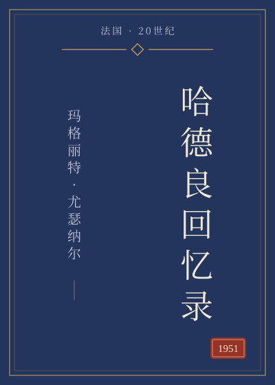
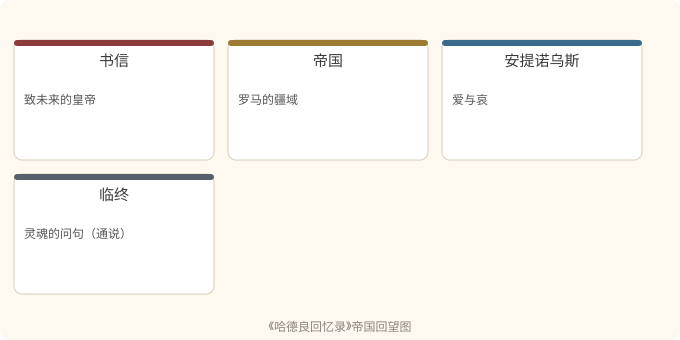

哈德良回忆录
一、基本信息
| 作者 | 玛格丽特·尤瑟纳尔 |
|---|---|
| 成书/出版 | 1951年（Britannica：Her masterpiece is Mémoires d'Hadrien (1951; Memoirs of Hadrian), a historical novel） Marguerite Yourcenar — Encyclopaedia Britannica（百科全书） |
| 国别/地区 | 法国 |
| 时代 | 现当代 · 20世纪 |
| 体裁 | 历史小说 |
| 语言 | 法语 |

《哈德良回忆录》帝国回望图（主题·结构图）
二、创作背景
Britannica（B285）：'Her masterpiece is Mémoires d'Hadrien (1951; Memoirs of Hadrian), a historical novel'（杰作）。
文体（B285 语境）：'rigorously classical style, their erudition, and their psychological subtlety'——以第一人称书信体重构罗马皇帝哈德良的内心。
三、内容脉络
致马可·奥勒留的长信：从西班牙到罗马的一生（通说待核）。
'Animula vagula blandula'——临终对灵魂的发问（通说待核）。
四、主要人物表
| 人物 | 身份 | 说明 |
|---|---|---|
| 哈德良 | 罗马皇帝 | 第一人称（通说待核） |
| 安提诺乌斯 | 爱人 | （通说待核） |
五、主题与艺术特点
- 历史的心理重构（B285：psychological subtlety）。
- 权力与美、生与死（通说）。
- '古典'的博学（B285：erudition）。
六、影响与评论
- Britannica：'Her masterpiece'（B285）。
Marguerite Yourcenar — Encyclopaedia Britannica（百科全书） - Britannica：1980年法兰西学院首位女性院士（B285）。
Marguerite Yourcenar — Encyclopaedia Britannica（百科全书）
七、阅读建议
难点
- 罗马史知识。
- 书信体的静穆语调。
- 《哈德良回忆录》（上海三联书店/东方出版中心版本，通说待核）。
- 法文原版（Plon/Gallimard）。
历史小说进阶之作。
八、待核实
- 1951年出版（Plon说）核对。
- 安提诺乌斯/马可·奥勒留情节核对。
- 'Animula vagula blandula'引文核对。
本页主要来源
玛格丽特·尤瑟纳尔的其他收录作品：哈德良回忆录